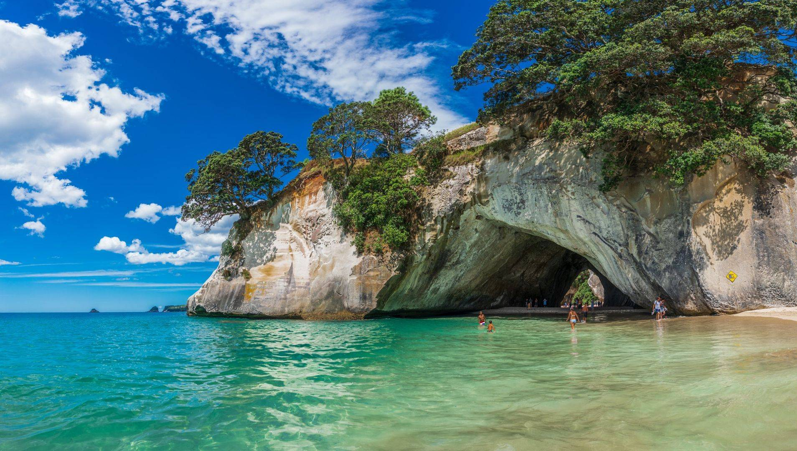
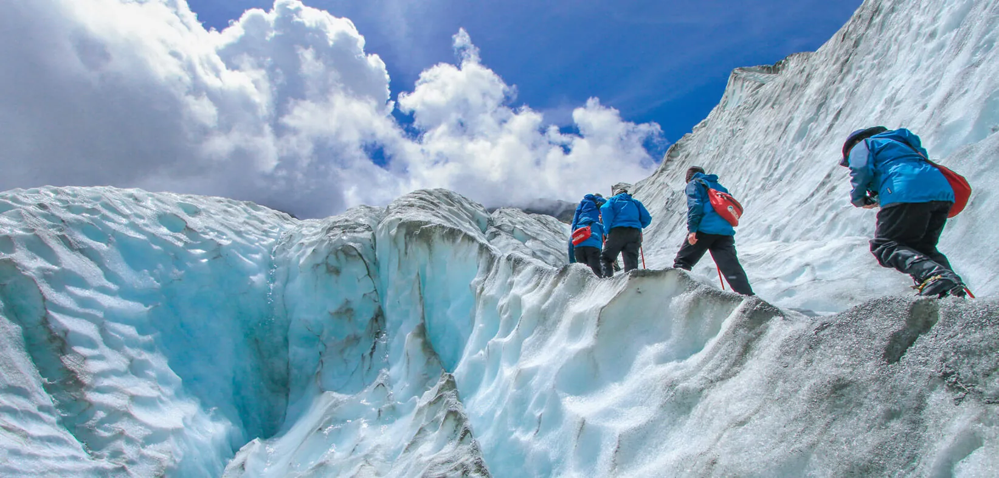
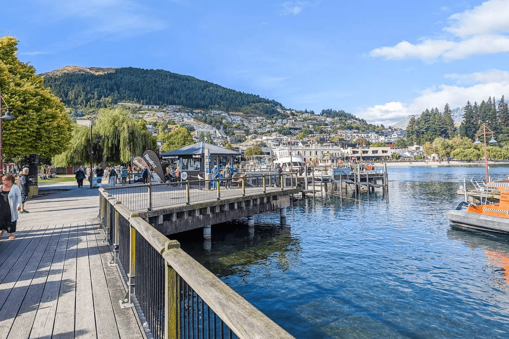
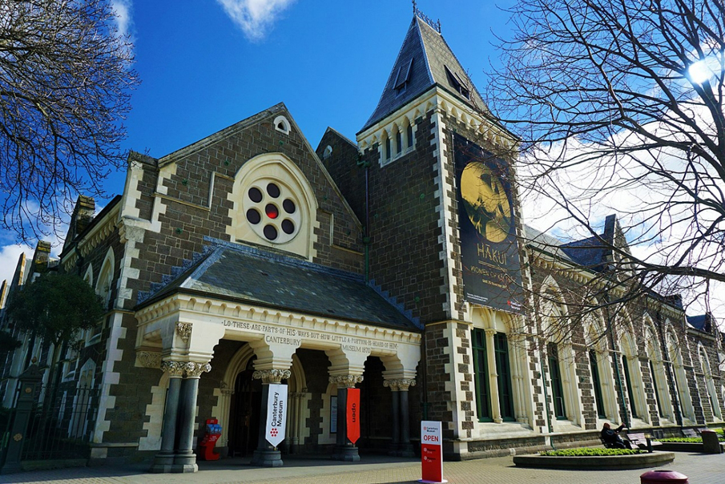
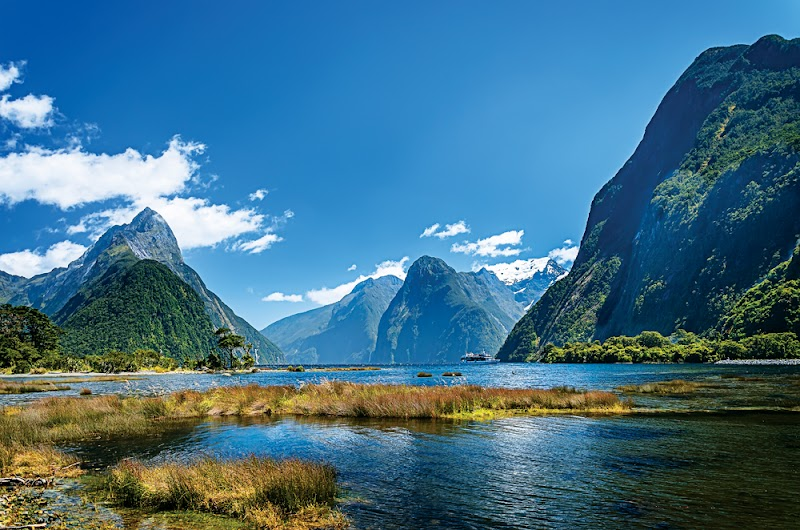

DESTINATIONS
CATHEDRAL COVE
Cathedral Cove is located at Coromandel Peninsula, New Zealand. It is a cave beach that's famous for its rock formation. Additionally, Cathedral Cove is a good destination in New Zealand because it has a beautiful sceneries, cottages, location points so, it's definitely worth it to go here.
FRANZ JOSEF GLACIER
Franz Josef Glacier is located at South West Land on the West Coast of New Zealand. It's a glacier that's accessible for the tourist. In fact, Josef Franz Glacier is the most publicly-accessible glacier in the world. Additionally, It's also a good destination for the tourists who will go in the New Zealand. Franz Josef Glacier is indeed good because of its snow in which you can play as well as enjoy.
QUEENSTOWN
Quenstown is located at Otago, South Island New Zealand. It's a good destination for tourists in which, they can do activities such as, cycling in terrain, hot pools, mountain hiking and skydiving. Also, it's a peaceful place that's designed for the people who wants to enjoy and quiet vacation.
CANTERBURY MUSEUM
Canterbury Museum is located at Central City of Christchurch, New Zealand. It's a very recommend destination for tourists who likes artifacts and history. Also, Canterybury Museum have many historic artifacts from the roman era up to modern era. This museum preserves extinct animals as well as, transportation machine like motors.
FIORDLAND NATIONAL PARK
Fiordland National Park is located at Little Park Lane, Te Anau South Island, New Zealand. It's a park that's very beautiful in which is very good for the tourists. This park has waterfalls, lakes, forests and many more. The tourists won't be bored while taking a walk in this park. Also, this is a pure nature environment in which, is recommended for nature lover tourists.